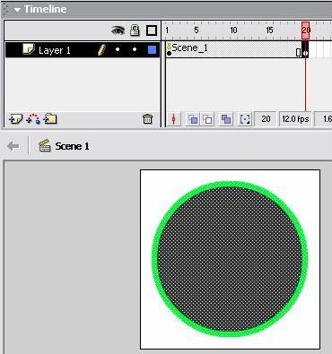
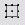
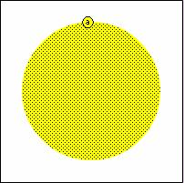
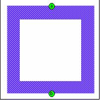

animation
What will you learn
- Motion Tween (the basis for the rest of the motion tweens)
- Shape Tween (the basis for the rest of the shape tweens)
- Size Tween
- Complex Shape Tween with Hints
- Color Tween
- Alpha Tween
- Easing Tween
- Rotation
- Guided Motion
- Text Animation
Motion Tween
- Example of a simple tween:
- Insert a Symbol on the Stage ( refer to Objectson how to create symbols out of graphics)
- The timeline will look like this:
with only frame 1 having a keyframe
The Stage will have the symbol
- Next, we go to another frame in the same layer eg. Frame 35.
- Right Click the frame > Choose Insert Keyframe
- The layer with timeline will now look like this:
- There are 2 keyframe now : Frame 1 and frame 35
- In the stage, at frame 35, move the symbol to any position you want.
Eg: to the Right.
- Next, Right click at any frame in between frame 1 and frame 35
- Choose Create Tween Motion
- The Frames in between frame 1 and frame 35 will now show an arrow
and will be slightly tinted.

- Go to Control > Play to test out your first animation !
Shape Tween
- Example of Shape Tween:
- Select Frame 1 and draw an object on the stage. You do not need to
convert it to a symbol.
- Go to a further frame eg. frame 20.
Right Click > Insert Keyframe

- In the key frame 20 we are going to have another shape. So we shall
select frame 20 and delete the circle. Now frame 20 is a blank keyframe.
- Next in Frame 20, we will select frame 20 and make sure that the frame
is highlighted.
- We will now draw a square in frame 20
- And we will repeat the same process from the beginning if we want
a third shape
We will go to frame 40 and Right click > Insert Keyframe
- Select frame 40 and delete the shape on the stage. Frame 40 will
now be a blank keyframe

- Select frame 40 and make sure that it is highlighted
- Draw another shape, eg a triangle on the stage
- To prolong the appearance of the triangle on the stage, we will select
frame 40 and press F5 to add frames until frame 50
- We will now choose any point between 2 keyframes
- Go to the Properties Toolbar > Tween > Shape
- After shape tweening the Properties toolbar will look like this:
The Frames with shape tweening will be tinted green:
- Go to the middle of the next 2 keyframes and add Shape Tweening in
the same manner.
- Go to Control > Play OR Control > Test Movie to see the same effect as the example above!
Size Tween
- Example
- Use the same method as Motion Tween
- Go to the keyframe where you want to change the size
- Use Free Transform Tool to change its size 
- You can also shear or rotate its position
Complex Shape Tween with Hints
- Often the morphing between 2 shapes in the shape tweening isnot satisfactory.
In this case we can add Shape Hints
- An Example with No Shape Hints An
Example with Shape Hints
- Create a shape tweening
- Go to the start of the tween ( a keyframe)
- Go to Modify > Shape > Add Shape Hints
- Little red colored shape hints will be added
- Move the red colored shape hint to the intial position of the tweening

If successful, it will be yellow in color
- Go to the end of the tween and move the shape hints to the desired
position
- If successful, the shape hint will be green in color
- Go on the add more shape hints in the initial and final stage of
the tweens

If you want to remove the Shape Hints, - Go the the intial keyframe
- Right Click on the Hint you want to delete

Color Tween
- Use the same method as Shape Tweening
- Just change the colors when inserting a new shape in each of the keyframe.
Remember to experiment with gradients like radial and linear.
- Example:
Alpha Tween
- Example of Alpha effects in Tweening
- Use the same method as Motion Tweening
- Select the keyframe where you want to change the transparency of the object
- Go to Properties > Color > Alpha
- Choose the Alpha percentage
Easing Tween
- Easing can control the acceleration and deceleration of the moving object in the tween
- Create a motion tween
- After the Motion Tween's arrow is seen in between the 2 keyframes, select a frame in between the 2 keyframe
- Go to Properties > Ease and choose a positive / negetive or a zero
value
- Example:
Rotation
- Example:
- Create a Motion tween
- Select a frame in between the 2 keyframes of the motion tween
- Go to Properties > Rotate and choose Clock-Wise or Counter-Clockwise
Rotation
- After choosing the typr of rotation you can also choose the number
of rotation
Guided Motion
- You can make an object travel in a path drawn by you thanks to the guided motion
- Example:
- Create a normal motion tween
- Select the layer with the Motion Tween > Right Click > Add
Motion Guide
- A Motion Guide Layer will be added on the top of the Motion Tween
Layer
- On the Guide Layer Use the Pencil Tool and draw you path connecting the intial and final position of the tween
- Go to View > Snap To Objects ( Checked)
- Select the 1st frame of the motion guide and click the free transform tool
- In this way you will be able to see the centre of the tweened object
- Move the centre of the object to the start of the guide line
- Do the same with the last frame

- Now go to Control > Play to see that the object travels on the
path drawn by you !
- Sometimes the guided motion does not look natural as the object does
not bend as it travels along the Path. For this we need to choose Orient
to Path . Example
Not Oriented to Path
Oriented to Path
- Select a frame of the motion tween
- Go to Properties > Orient to Path ( checked)
Text Animation
- Using the Text Tool write down a text
- Press F8 to Convert it to a graphic symbol
- Now you can use the motion tween method to create your text animation
- You can rotate it, make alpha changes and all the other animations